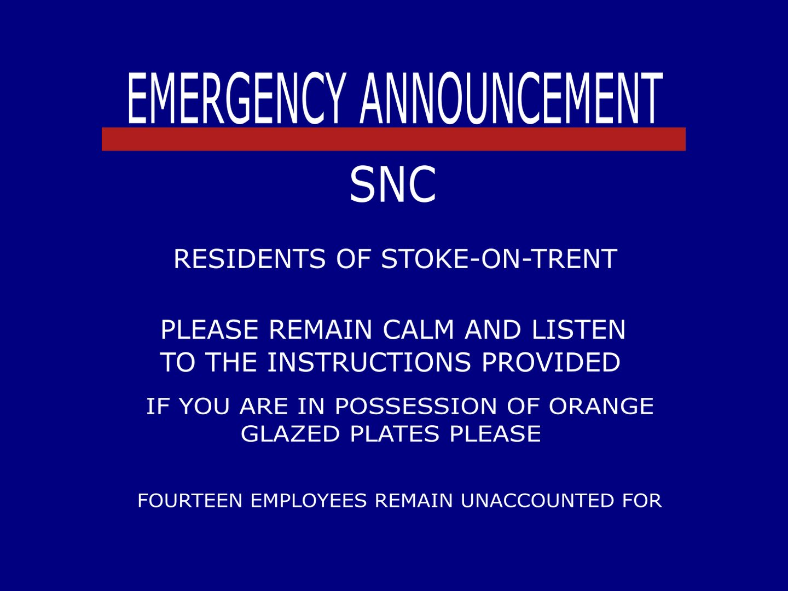
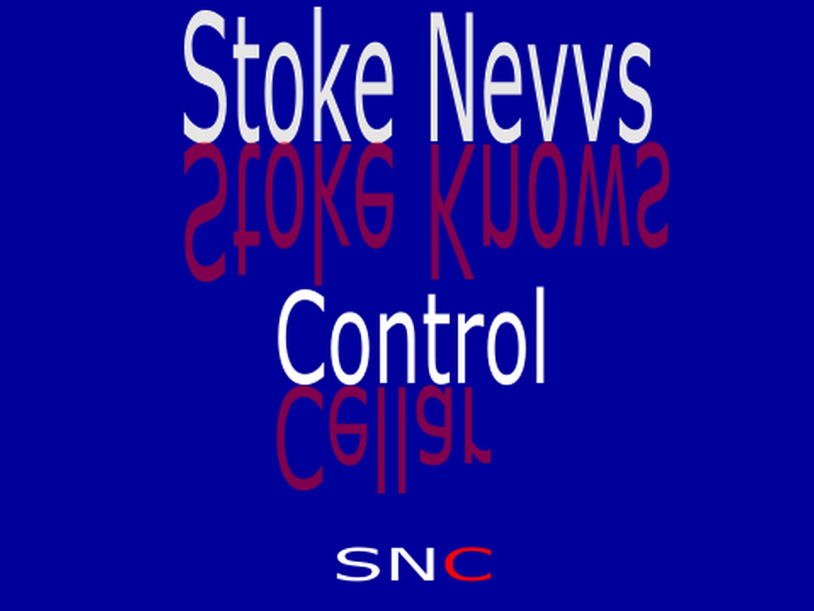
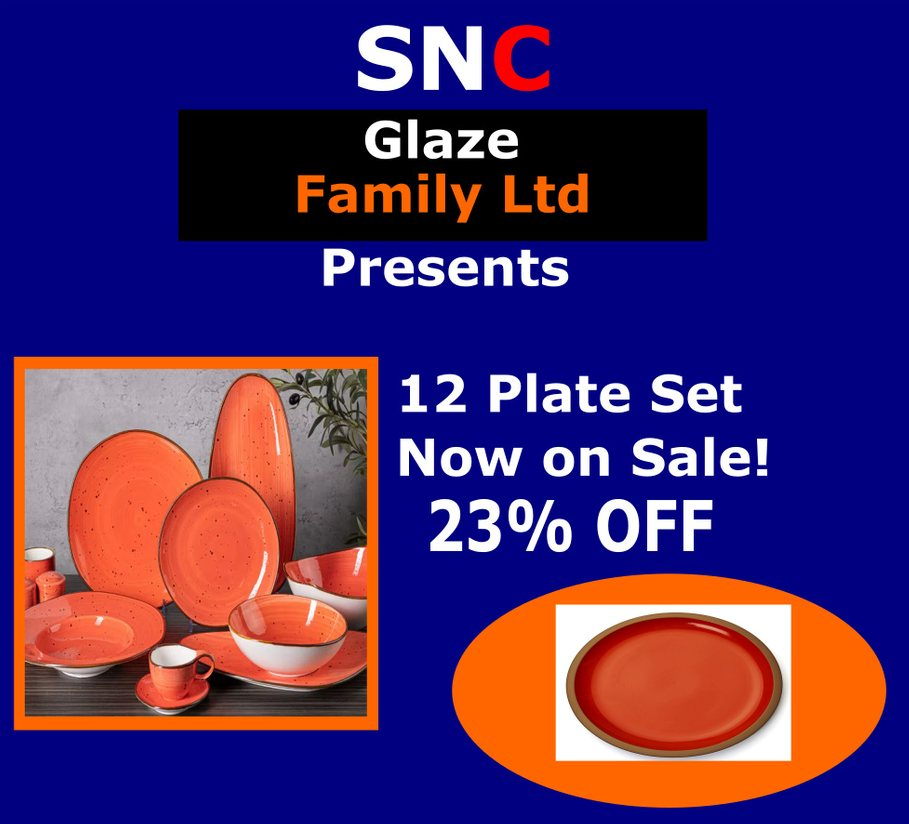
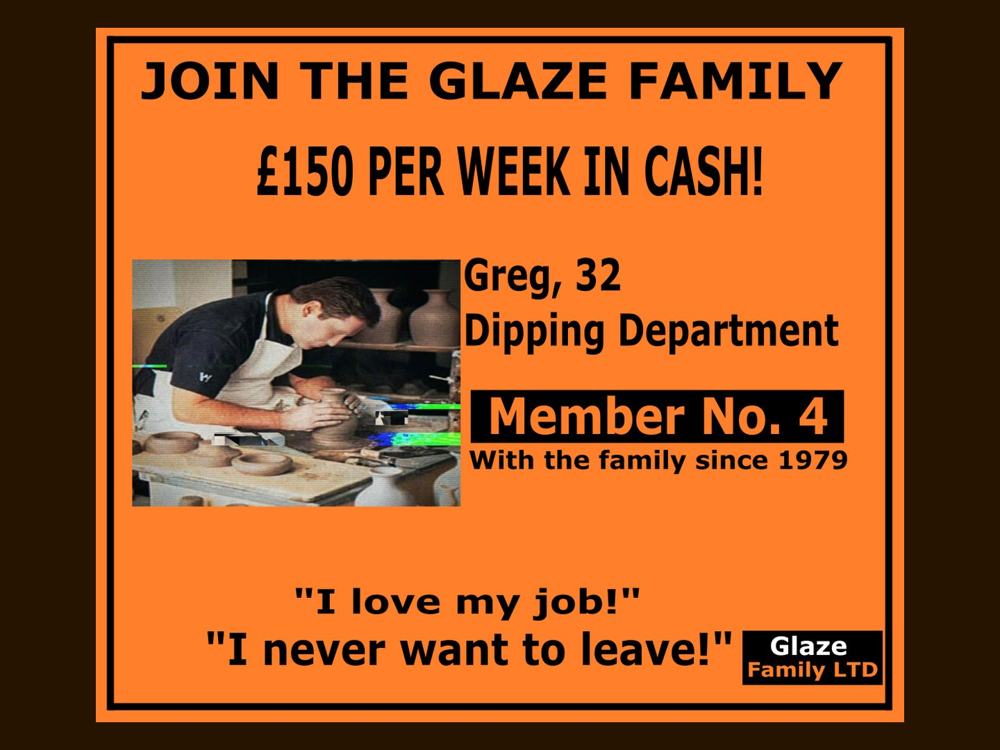
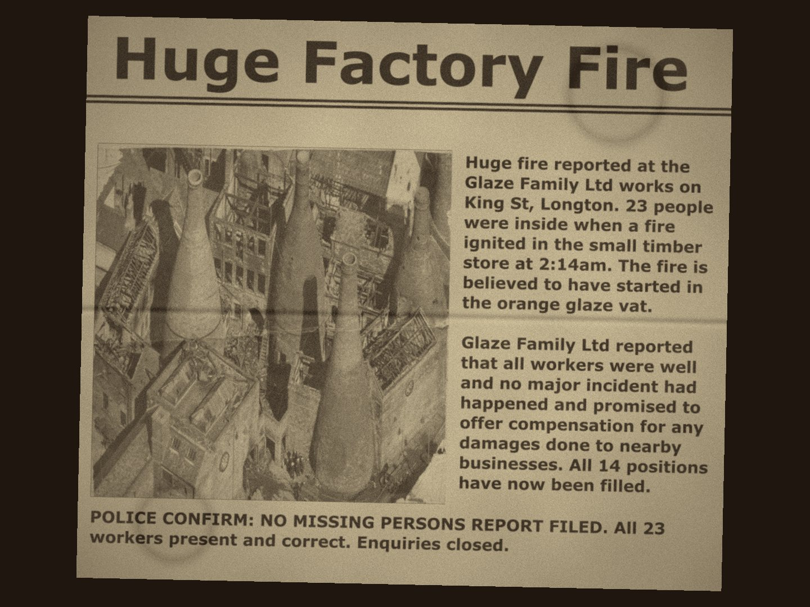
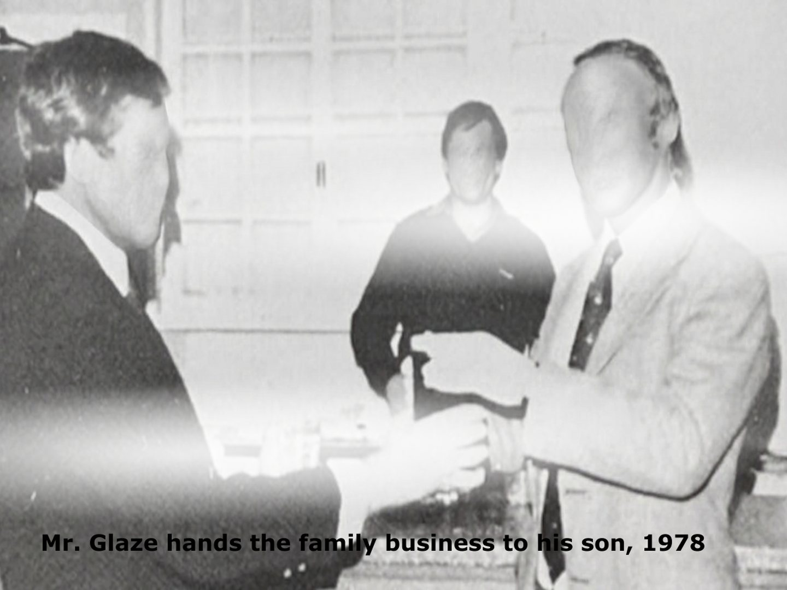

Final Major Project · In production
Glaze Family Ltd
A 15–20 minute analog horror short set in 1980s Stoke-on-Trent, presented as a recovered VHS tape.
The idea
An emergency broadcast is interrupted by a recruitment advert for Glaze Family Ltd, a fictional pottery company.
Training tapes introduce the factory, its staff and its safety procedures, but gradually reveal that something is wrong: a factory fire, missing workers, and a vast, liminal basement spreading beneath the site.
Research question
How can ordinary corporate and training media be used to create dread?
The project draws on The Mandela Catalogue's instructional diagrams, Local 58's broadcast takeovers, Vita Carnis's documentary-style presentation and The Oracle Project's talking computer system, alongside research into the Potteries' industrial history and real 1980s training videos and adverts.
Graphic design
Building the world
Every graphic is designed to pass as genuine 1980s broadcast and print material, so the horror sits inside believable corporate media.





Production approach
Built mainly from slides, graphic design and voiceover, edited in DaVinci Resolve with a VHS treatment. Where possible, real footage of pottery being made at locations such as Gladstone Pottery Museum and Middleport Pottery will add authenticity, with the slide-based approach as a fallback so the project can always move forward.
Sound is planned with university camera and DJI lavalier microphones, then degraded in post to match 1980s audio, with voiceover recorded on a home studio microphone.
Audience & testing
Aimed at young adults (16+) who enjoy mystery shorts and theorising online, released on YouTube where analog horror spreads through reaction and theory channels.
A 30–60 second test clip is shown to the target audience with two questions: what felt unsettling, and what felt unclear. The answers shape the visual style, pacing and script.